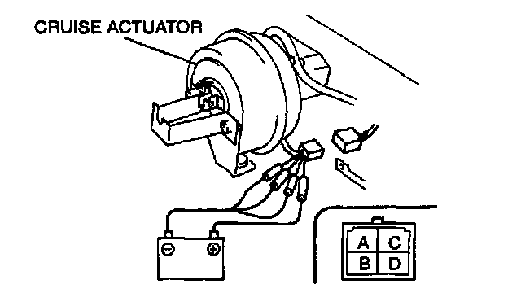
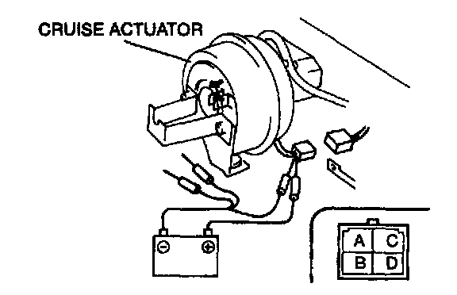
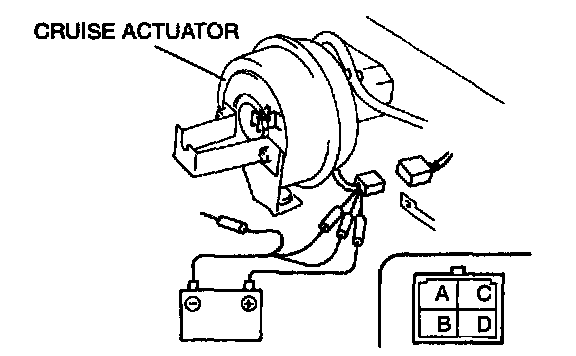
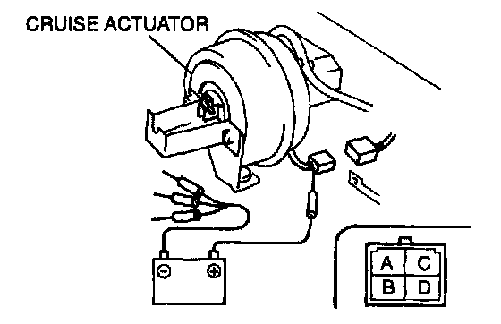

Cruise Control Servo Inspection
1. Disconnect the cruise actuator connector.2. Disconnect the actuator cable from the cruise actuator.
3. Allow the engine to idle.

4. Confirm that the diaphragm is drawn into the cruise actuator when battery positive voltage is connected to terminal C and terminals A, B and D are connected to the ground.

5. With the diaphragm being drawn into the cruise actuator, confirm that the diaphragm returns to its original position when terminals B and D are disconnected from the ground.

6. With the diaphragm returning to its original position, confirm that the diaphragm stops moving when terminal D is reconnected to the ground.

7. With the movement of the diaphragm stopped, confirm that the diaphragm returns completely to its original position when all terminals connected to the ground are disconnected.
8. If not as specified, replace the cruise actuator.